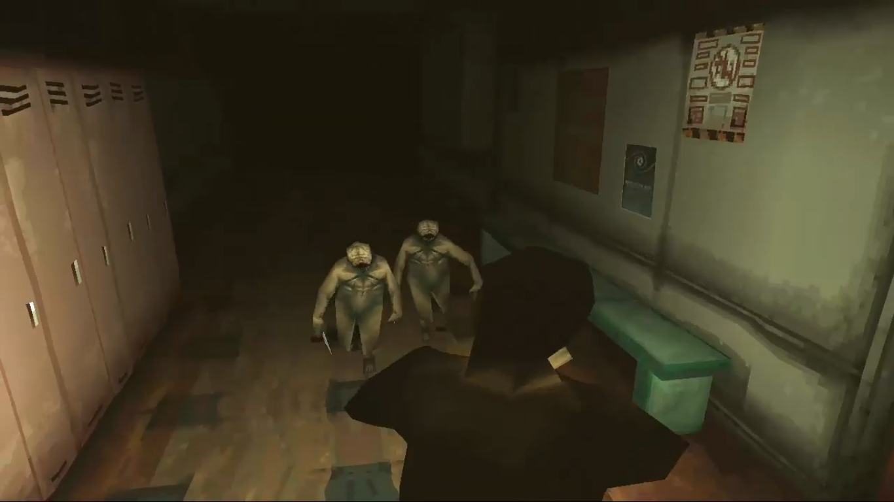
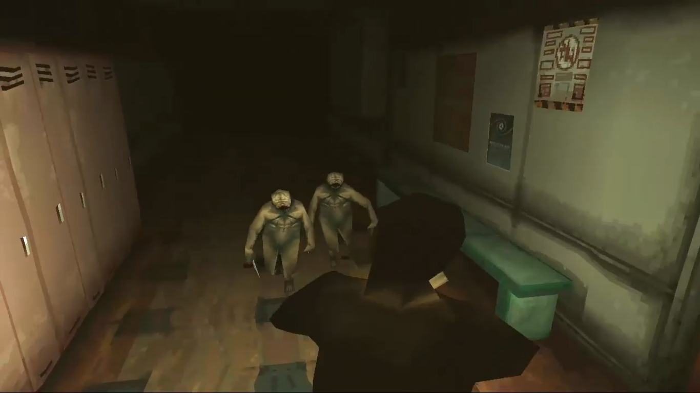

In Silent Hill, you're Harry Mason, hunting for his missing kid in the freaky, misty town of Silent Hill. This place is like something out of a nightmare, man.
Harry gets tangled up in some bizarre cult stuff and stumbles onto some wild secrets about his daughter.
It's all eerie vibes, major chills, and twisted turns in this mind-bending horror trip.
Some CharactersHarry Mason Cybil Bennett Lisa Garland |
Some MonstersPuppet NurseMumbler Wormhead |
Some WeaponsSteel PipeThe Steel Pipe is your trusty go-to weapon for most of the game. It's not the fastest thing around, especially when you're up against some super-speedy enemies – that's when you might wanna switch to the knife. But let me tell you, the pipe packs a solid punch. It's like your reliable heavy hitter for laying down the law in those creepy Silent Hill streets! Handgun The Handgun is your ace for keeping things chill from a distance. It's got decent stopping power, making it a solid choice when you wanna take out those freaky foes without getting up close and personal. It's like your trusty sidekick for those long-range spooks! Rock Drill The rock drill is a serious powerhouse. It's mega strong, but the catch? It's super heavy and a real hassle to handle. Plus, Harry can't move while he's using it, so you gotta be strategic with this beast. It's like wielding a sledgehammer in a haunted house – packs a wallop, but you gotta be smart about it! |
 


|